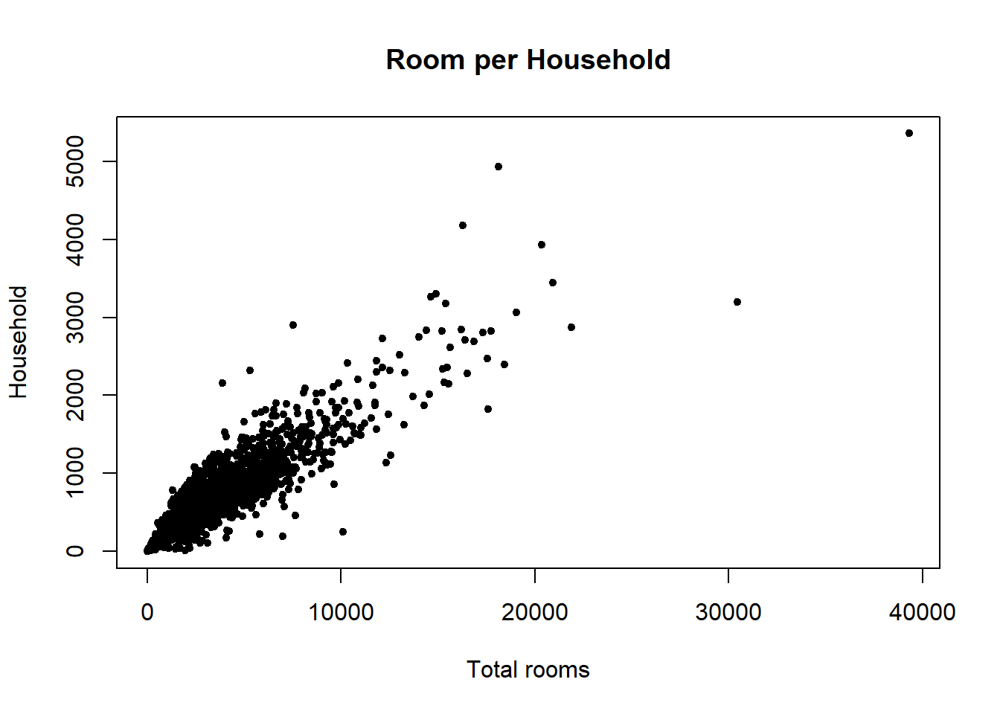
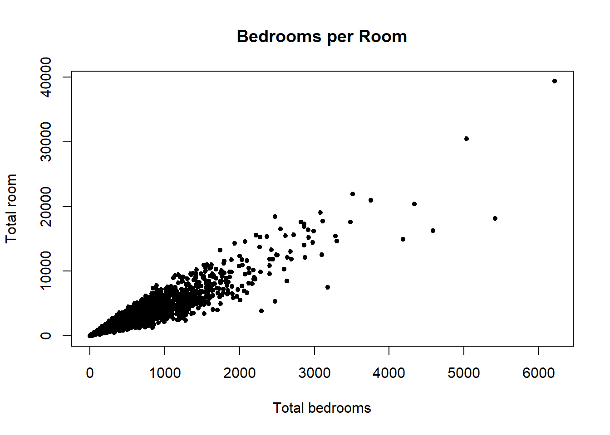
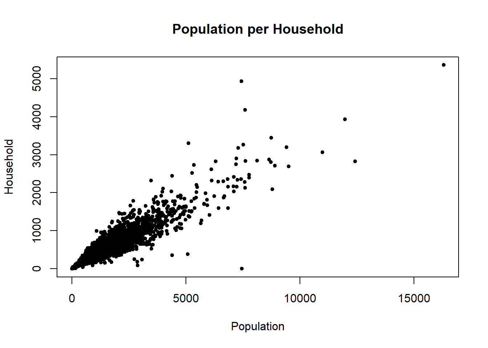
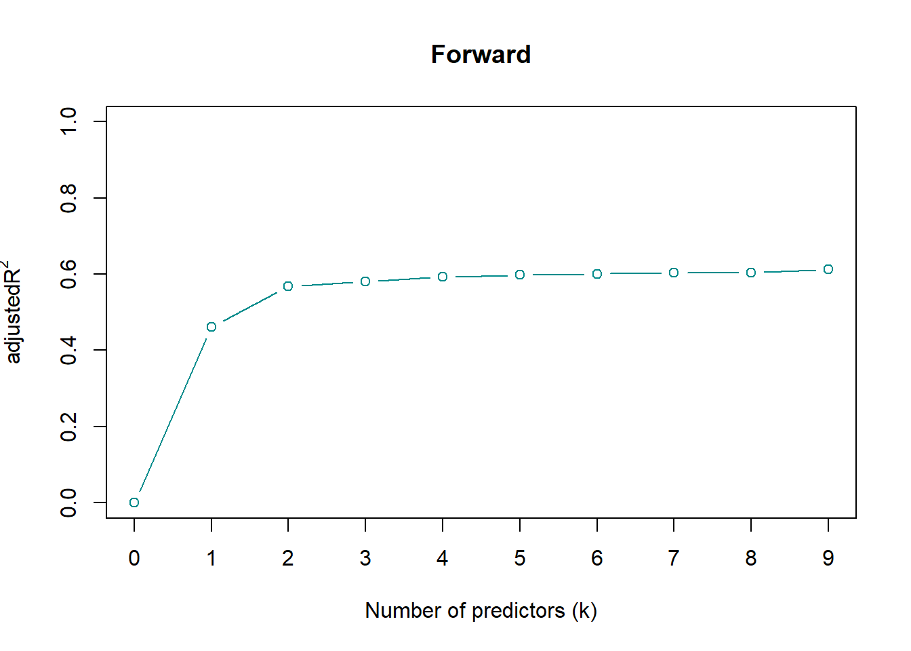
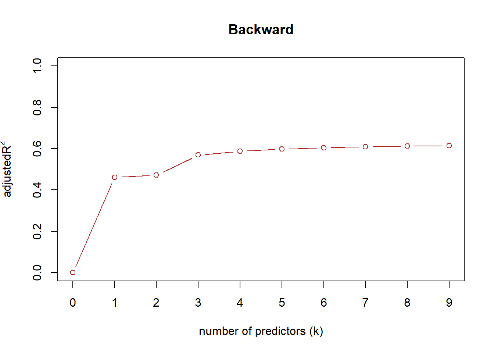
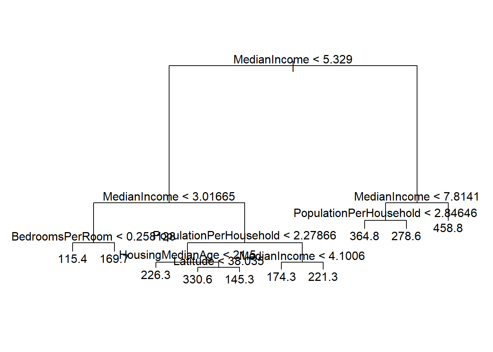

set.seed(123)
df=read.csv("Riccardo Dondi_house.csv")
nrow(df)[1] 5000house_clean= df[complete.cases(df),]
nrow(house_clean)[1] 4951QUESTION 1 First of all I will set the seed at 123 and upload the csv file renaming it ‘df’. Then I will check the number of rows before and after having selected only the complete cases in the new object ‘house_clean’. The difference between the two will be the number of rows containing NA values.
set.seed(123)
df=read.csv("Riccardo Dondi_house.csv")
nrow(df)[1] 5000house_clean= df[complete.cases(df),]
nrow(house_clean)[1] 4951Having seen that some variables depends on the size of the census block, I create 3 new variables.
attach(house_clean)
house_clean$RoomsPerHousehold=TotalRooms/Households
house_clean$BedroomsPerRoom=TotalBedrooms/TotalRooms
house_clean$PopulationPerHousehold=Population/Households
colnames(house_clean) [1] "Longitude" "Latitude" "HousingMedianAge"
[4] "TotalRooms" "TotalBedrooms" "Population"
[7] "Households" "MedianIncome" "MedianHouseValue"
[10] "OceanProximity" "RoomsPerHousehold" "BedroomsPerRoom"
[13] "PopulationPerHousehold"I now provide a graphical representation of the new variables through a plot.
plot(x=house_clean$TotalRooms,y=house_clean$Households, type= 'p', main="Room per Household",
xlab="Total rooms", ylab="Household",ylim=c(0,5358), pch=20)
plot(x=house_clean$TotalBedrooms,y=house_clean$TotalRooms, type= 'p', main="Bedrooms per Room",
xlab="Total bedrooms", ylab="Total room",xlim=c(0,6210), pch=20)
plot(x=house_clean$Population,y=house_clean$Households, type= 'p', main="Population per Household", xlab="Population", ylab="Household",xlim=c(0,16305), ylim=c(0,5358), pch=20)
I now remove the older versions for ‘house_clean’ and create a definitve variable ‘house’ that I will use all along. For each new variable I will also add some summary statistics.
house= house_clean[,-c(4,5,6)]
summary(house$RoomsPerHousehold) Min. 1st Qu. Median Mean 3rd Qu. Max.
0.8462 4.4113 5.1912 5.4255 6.0432 132.5333 summary(house$BedroomsPerRoom) Min. 1st Qu. Median Mean 3rd Qu. Max.
0.1000 0.1764 0.2048 0.2146 0.2417 1.0000 summary(house$PopulationPerHousehold) Min. 1st Qu. Median Mean 3rd Qu. Max.
0.6923 2.4222 2.8144 3.1817 3.2791 1243.3333 Question 2
In order to operate a linear regression on median house value, I need to define the response variable ‘y’ and the predictors ‘X’. Obviously I need to remove from X, the response variable y and then using the function lm() I can fit the model and then check the summary of the output.
y=house$MedianHouseValue
X= house[,-c(6)] #removing median house value
output_lm= lm(y ~ ., data=X)
summary_lm=summary(output_lm)From the summary I can extract: - the coefficients, so the weights that each predictor has in predicting the response variable; - the residuals, so the difference between the observed and the predicted values; - the adjusted R squared, so the percentage of variance explained by the model.It is a value that goes from 0 to 1, the closer to 1, the better the model.In our case the adjusted R squared is 0.65, so the model is able to explain 65% of the variance in the response variable.
output_lm$coefficients (Intercept) Longitude Latitude
-2.199865e+03 -2.465272e+01 -2.316727e+01
HousingMedianAge Households MedianIncome
1.190111e+00 2.443631e-02 4.380526e+01
OceanProximityINLAND OceanProximityNEAR BAY OceanProximityNEAR OCEAN
-3.027342e+01 1.585006e+00 9.759270e+00
RoomsPerHousehold BedroomsPerRoom PopulationPerHousehold
2.059922e+00 3.156469e+02 -3.345409e-01 head(output_lm$residuals) 1 2 3 4 5 6
-96.036574 -8.355704 -74.912221 -83.139517 -80.653017 30.254661 summary_lm$adj.r.squared[1] 0.6148924In the summary, we can also see that next to thecoefficient there are some stars, that indicate the significance of the predictor based on certain values of the p-value. The more stars there are, the more significant is the predictor. In this case, we can byt hte legend that if our significance level would be of 5%, so alpha = 0.05, all the predictors can be used a part for ‘OceanProximityNEAR BAY’, as it has no symbol.
summary_lm
Call:
lm(formula = y ~ ., data = X)
Residuals:
Min 1Q Median 3Q Max
-318.54 -44.87 -11.68 28.96 382.00
Coefficients:
Estimate Std. Error t value Pr(>|t|)
(Intercept) -2.200e+03 1.815e+02 -12.118 < 2e-16 ***
Longitude -2.465e+01 2.093e+00 -11.778 < 2e-16 ***
Latitude -2.317e+01 2.059e+00 -11.254 < 2e-16 ***
HousingMedianAge 1.190e+00 9.378e-02 12.691 < 2e-16 ***
Households 2.444e-02 2.868e-03 8.521 < 2e-16 ***
MedianIncome 4.381e+01 7.811e-01 56.079 < 2e-16 ***
OceanProximityINLAND -3.027e+01 3.677e+00 -8.233 2.31e-16 ***
OceanProximityNEAR BAY 1.585e+00 4.012e+00 0.395 0.69279
OceanProximityNEAR OCEAN 9.759e+00 3.251e+00 3.002 0.00269 **
RoomsPerHousehold 2.060e+00 4.030e-01 5.112 3.32e-07 ***
BedroomsPerRoom 3.156e+02 2.388e+01 13.220 < 2e-16 ***
PopulationPerHousehold -3.345e-01 5.763e-02 -5.805 6.83e-09 ***
---
Signif. codes: 0 '***' 0.001 '**' 0.01 '*' 0.05 '.' 0.1 ' ' 1
Residual standard error: 71.19 on 4939 degrees of freedom
Multiple R-squared: 0.6157, Adjusted R-squared: 0.6149
F-statistic: 719.5 on 11 and 4939 DF, p-value: < 2.2e-16Question 3: To apply a subset selection model, first of all I need to evaluate the numebr of predicotr, which cannot be more than the columns of the dataset minus 1, as I need to remove the response variable. Then I can use the function regsubsets() from the package ‘leaps’ to fit the model and then check the summary of the output. The 2 different approaches ‘forward’ and ‘backward’ can be used by updating the method argument.
library(ISLR)Warning: package 'ISLR' was built under R version 4.5.3library(leaps)Warning: package 'leaps' was built under R version 4.5.3p = ncol(X) #number of predictors
out_fwd = regsubsets(y ~ ., X, nvmax = p, method = "forward")
reg_summary_fwd = summary(out_fwd)
out_bwd = regsubsets(y ~ ., X, nvmax = p, method = "backward")
reg_summary_bwd = summary(out_bwd)Now I extract the adjusted R squred values for each model and plot it in order to find the best combination.
reg_summary_fwd$adjr2[1] 0.4615838 0.5684850 0.5811630 0.5923104 0.5985023 0.6010286 0.6030124
[8] 0.6045270 0.6129873reg_summary_bwd$adjr2[1] 0.4615838 0.4722518 0.5694172 0.5868675 0.5976109 0.6044109 0.6095884
[8] 0.6122558 0.6143355plot(0:p, c(0, reg_summary_fwd$adjr2), ylim = c(0,1), xlab = "Number of predictors (k)", type = "b",
ylab = expression(adjustedR^2), xaxt = "none", col = "cyan4", main = "Forward")
axis(1, 0:p)
plot(0:p, c(0, reg_summary_bwd$adjr2), ylim = c(0,1), xlab = "number of predictors (k)", type = "b",
ylab = expression(adjustedR^2), xaxt = "none", col = "brown", main = "Backward")
axis(1, 0:p)
In both approache the best number of predictors which better balances model complexity and accuracy in my opinion is 5. We can now see which are the predictors that are included in the model with 5 predictors. The stars shows which predictors are included in the model.
reg_summary_fwdSubset selection object
Call: regsubsets.formula(y ~ ., X, nvmax = p, method = "forward")
11 Variables (and intercept)
Forced in Forced out
Longitude FALSE FALSE
Latitude FALSE FALSE
HousingMedianAge FALSE FALSE
Households FALSE FALSE
MedianIncome FALSE FALSE
OceanProximityINLAND FALSE FALSE
OceanProximityNEAR BAY FALSE FALSE
OceanProximityNEAR OCEAN FALSE FALSE
RoomsPerHousehold FALSE FALSE
BedroomsPerRoom FALSE FALSE
PopulationPerHousehold FALSE FALSE
1 subsets of each size up to 9
Selection Algorithm: forward
Longitude Latitude HousingMedianAge Households MedianIncome
1 ( 1 ) " " " " " " " " "*"
2 ( 1 ) " " " " " " " " "*"
3 ( 1 ) " " " " " " " " "*"
4 ( 1 ) " " " " "*" " " "*"
5 ( 1 ) " " " " "*" "*" "*"
6 ( 1 ) " " " " "*" "*" "*"
7 ( 1 ) " " " " "*" "*" "*"
8 ( 1 ) "*" " " "*" "*" "*"
9 ( 1 ) "*" "*" "*" "*" "*"
OceanProximityINLAND OceanProximityNEAR BAY OceanProximityNEAR OCEAN
1 ( 1 ) " " " " " "
2 ( 1 ) "*" " " " "
3 ( 1 ) "*" " " " "
4 ( 1 ) "*" " " " "
5 ( 1 ) "*" " " " "
6 ( 1 ) "*" " " " "
7 ( 1 ) "*" " " "*"
8 ( 1 ) "*" " " "*"
9 ( 1 ) "*" " " "*"
RoomsPerHousehold BedroomsPerRoom PopulationPerHousehold
1 ( 1 ) " " " " " "
2 ( 1 ) " " " " " "
3 ( 1 ) " " "*" " "
4 ( 1 ) " " "*" " "
5 ( 1 ) " " "*" " "
6 ( 1 ) " " "*" "*"
7 ( 1 ) " " "*" "*"
8 ( 1 ) " " "*" "*"
9 ( 1 ) " " "*" "*" reg_summary_bwdSubset selection object
Call: regsubsets.formula(y ~ ., X, nvmax = p, method = "backward")
11 Variables (and intercept)
Forced in Forced out
Longitude FALSE FALSE
Latitude FALSE FALSE
HousingMedianAge FALSE FALSE
Households FALSE FALSE
MedianIncome FALSE FALSE
OceanProximityINLAND FALSE FALSE
OceanProximityNEAR BAY FALSE FALSE
OceanProximityNEAR OCEAN FALSE FALSE
RoomsPerHousehold FALSE FALSE
BedroomsPerRoom FALSE FALSE
PopulationPerHousehold FALSE FALSE
1 subsets of each size up to 9
Selection Algorithm: backward
Longitude Latitude HousingMedianAge Households MedianIncome
1 ( 1 ) " " " " " " " " "*"
2 ( 1 ) " " "*" " " " " "*"
3 ( 1 ) "*" "*" " " " " "*"
4 ( 1 ) "*" "*" " " " " "*"
5 ( 1 ) "*" "*" "*" " " "*"
6 ( 1 ) "*" "*" "*" " " "*"
7 ( 1 ) "*" "*" "*" "*" "*"
8 ( 1 ) "*" "*" "*" "*" "*"
9 ( 1 ) "*" "*" "*" "*" "*"
OceanProximityINLAND OceanProximityNEAR BAY OceanProximityNEAR OCEAN
1 ( 1 ) " " " " " "
2 ( 1 ) " " " " " "
3 ( 1 ) " " " " " "
4 ( 1 ) " " " " " "
5 ( 1 ) " " " " " "
6 ( 1 ) "*" " " " "
7 ( 1 ) "*" " " " "
8 ( 1 ) "*" " " " "
9 ( 1 ) "*" " " " "
RoomsPerHousehold BedroomsPerRoom PopulationPerHousehold
1 ( 1 ) " " " " " "
2 ( 1 ) " " " " " "
3 ( 1 ) " " " " " "
4 ( 1 ) " " "*" " "
5 ( 1 ) " " "*" " "
6 ( 1 ) " " "*" " "
7 ( 1 ) " " "*" " "
8 ( 1 ) " " "*" "*"
9 ( 1 ) "*" "*" "*" Question 4: With the library ‘tree’ I can fit regression trees. The summarised output shows the variables used for the split, the number of observations in each node, the deviance and the prediction for each node.
library(tree)Warning: package 'tree' was built under R version 4.5.3tree.house = tree(y ~ ., data = X)Warning in tree(y ~ ., data = X): NAs introduced by coercionout.house = summary(tree.house)
out.house
Regression tree:
tree(formula = y ~ ., data = X)
Variables actually used in tree construction:
[1] "MedianIncome" "BedroomsPerRoom" "PopulationPerHousehold"
[4] "HousingMedianAge" "Latitude"
Number of terminal nodes: 10
Residual mean deviance: 5791 = 28610000 / 4941
Distribution of residuals:
Min. 1st Qu. Median Mean 3rd Qu. Max.
-321.300 -48.300 -9.871 0.000 41.220 384.600 This is the graphical representation of the tree.
par(mfrow=c(1,1))
plot(tree.house)
text(tree.house, pretty = 0)
I now apply a cross validation pruning with the function cv.tree(), from which I can find the minimum RSS for an optimal tree size.
cv.house = cv.tree(tree.house, K = 10) # K = 10 for 10-fold cross validationWarning in tree(model = m[rand != i, , drop = FALSE]): NAs introduced by
coercionWarning in pred1.tree(tree, tree.matrix(nd)): NAs introduced by coercionWarning in tree(model = m[rand != i, , drop = FALSE]): NAs introduced by
coercionWarning in pred1.tree(tree, tree.matrix(nd)): NAs introduced by coercionWarning in tree(model = m[rand != i, , drop = FALSE]): NAs introduced by
coercionWarning in pred1.tree(tree, tree.matrix(nd)): NAs introduced by coercionWarning in tree(model = m[rand != i, , drop = FALSE]): NAs introduced by
coercionWarning in pred1.tree(tree, tree.matrix(nd)): NAs introduced by coercionWarning in tree(model = m[rand != i, , drop = FALSE]): NAs introduced by
coercionWarning in pred1.tree(tree, tree.matrix(nd)): NAs introduced by coercionWarning in tree(model = m[rand != i, , drop = FALSE]): NAs introduced by
coercionWarning in pred1.tree(tree, tree.matrix(nd)): NAs introduced by coercionWarning in tree(model = m[rand != i, , drop = FALSE]): NAs introduced by
coercionWarning in pred1.tree(tree, tree.matrix(nd)): NAs introduced by coercionWarning in tree(model = m[rand != i, , drop = FALSE]): NAs introduced by
coercionWarning in pred1.tree(tree, tree.matrix(nd)): NAs introduced by coercionWarning in tree(model = m[rand != i, , drop = FALSE]): NAs introduced by
coercionWarning in pred1.tree(tree, tree.matrix(nd)): NAs introduced by coercionWarning in tree(model = m[rand != i, , drop = FALSE]): NAs introduced by
coercionWarning in pred1.tree(tree, tree.matrix(nd)): NAs introduced by coercioncv.house$size #number of regions in each fold [1] 10 9 8 7 6 5 4 3 2 1cv.house$dev #corresponding RSS (CV errors) [1] 31295644 31419884 31792173 33158002 34116029 34500532 37402086 40151230
[9] 45792223 65173529min.rss = which.min(cv.house$dev)
min.rss[1] 1#best size
size.best = cv.house$size[min.rss]
size.best[1] 10Now I can prune the tree to the optimal size. Which corresponds to 10 regions. I can also plot the pruned tree.
prune.house = prune.tree(tree.house, best = size.best)
plot(prune.house)
text(prune.house)
Question 5 For me the best model is the one predicted by the regression tree as it is able to capture various relations. From the model prune.house, i find the estimated y and calculate the MSE with the standard formula.
df1=read.csv("house_test.csv")
nrow(df1)[1] 995house_clean1= df1[complete.cases(df1),]
nrow(house_clean1)[1] 995head(house_clean1) Longitude Latitude HousingMedianAge TotalRooms TotalBedrooms Population
1 -118.41 34.16 32 3060 505 1159
2 -121.40 38.47 4 20982 3392 10329
3 -117.95 34.05 31 2349 539 2028
4 -119.86 36.78 7 2232 490 1274
5 -121.54 38.49 6 9104 1535 3759
6 -118.33 35.64 15 2966 669 1007
Households MedianIncome MedianHouseValue OceanProximity
1 510 6.3703 465.8 <1H OCEAN
2 3086 4.3658 130.6 INLAND
3 521 3.4940 154.5 <1H OCEAN
4 499 2.9853 74.7 INLAND
5 1481 5.1442 174.5 INLAND
6 465 1.5667 72.5 INLANDattach(house_clean1)The following objects are masked from house_clean:
Households, HousingMedianAge, Latitude, Longitude,
MedianHouseValue, MedianIncome, OceanProximity, Population,
TotalBedrooms, TotalRoomshouse_clean1$RoomsPerHousehold=TotalRooms/Households
house_clean1$BedroomsPerRoom=TotalBedrooms/TotalRooms
house_clean1$PopulationPerHousehold=Population/Households
house_test= house_clean1[,-c(4,5,6)]
colnames(house_test) [1] "Longitude" "Latitude" "HousingMedianAge"
[4] "Households" "MedianIncome" "MedianHouseValue"
[7] "OceanProximity" "RoomsPerHousehold" "BedroomsPerRoom"
[10] "PopulationPerHousehold"y.hat = predict(prune.house, newdata = house_test[])Warning in pred1.tree(object, tree.matrix(newdata)): NAs introduced by coercionunique(y.hat) [1] 364.8106 221.3446 174.2709 115.3694 169.6991 278.6094 458.7830 330.6431
[9] 145.2571 226.2655y.test = house_test["MedianHouseValue"]
mean((y.test - y.hat)^2)Warning in mean.default((y.test - y.hat)^2): argument is not numeric or
logical: returning NA[1] NA